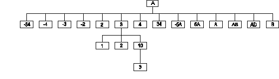

|
|
|
|
|
|
|
| ☜ | $ORDERM[UMPS] by Example | ☞ | ||||
Introduced in the 1984 ANSI M[UMPS] language standard.
This function returns information about other defined information in a data-structure, based on the collating sequence in use for that data-structure.
Assume that of global variable ^A the following elements exist (see diagram):

The code Set ID=–1 For K=1:1:25 Set
ID=$Order(^A(ID)) will cause the following values to
be assigned to the local variable ID:
"2", "3", "4", "34", "–5A",
"5A", "A", "AB",
"AD", "B", "", "–34", "–4",
"–3", "–2", "2",
"3", "4", "34", "–5A",
"5A", "A", "AB", "AD" and
"B".
| Reference | Value | |
|---|---|---|
| $Order(^A(–34)) | –4 | |
| $Order(^A(34)) | "–5A" | |
| $Order(^A("B")) | "" | |
| $Order(^A(3,1)) | 2 | |
| $Order(^A(3,10)) | "" | |
| $Order(^A(3,10,"")) | 3 | |
| $Order(^A(3,10,3)) | "" | |
| $Order(^A(–2)) | 2 | |
| $Order(^A("–5A")) | "5A" |
Assume that a database contains a set of customer records, organized by name of customers
^Demog("AlphaName","BAKER")=988
^Demog("AlphaName","HUSKINS")=12345
^Demog("AlphaName","ROSSMAN")=123
^Demog("AlphaName","SHIMPACH")=345
^Demog("AlphaName","SOUTHERN")=876
^Demog("AlphaName","XANDER")=1098
In order to process only a specific sub-range of that data-set, code like the following segment could be considered:
Write "Enter first letter(s): " Read start
Set name=start,done=0,index="AlphaName"
For Do Quit:done
. Do:$Data(^Demog(index,name))
. . ; Process one customer
. . Quit
. Set name=$Order(^Demog(index,name))
. Set:$Extract(name,1,$Length(start)'=start done=1
. Quit
Of course, it is always possible that there are multiple customers with the same name, in which case it would make sense to organize the data as:
^Demog("AlphaName","BAKER",988)=""
^Demog("AlphaName","HUSKINS",12345)=""
^Demog("AlphaName","HUSKINS",12399)=""
^Demog("AlphaName","ROSSMAN",123)=""
^Demog("AlphaName","SHIMPACH",345)=""
^Demog("AlphaName","SOUTHERN",876)=""
^Demog("AlphaName","XANDER",106)=""
^Demog("AlphaName","XANDER",1098)=""
Note that in this structure all information is in the subscripts, and that the data-value, equal to empty strings for all elements, is really irrelevant.
To process a sub-set, code like the following segment could be used:
Write "Enter first letter(s): " Read start
Set name=start,done=0,index="AlphaName"
For Do Quit:done
. Set cust="" For Do Quit:cust=""
. . Set cust=$Order(^Demog(index,name,cust))
. . Quit:cust=""
. . ; Process one customer
. . Quit
. Set name=$Order(^Demog(index,name))
. Set:$Extract(name,1,$Length(start)'=start done=1
. Quit
Addition in the 1995 ANSI M[UMPS] language standard (reverse traversal):
| Reference | Value | |
|---|---|---|
| $Order(^A(3,1),1) | 2 | |
| $Order(^A(3,10),1) | "" | |
| $Order(^A(3,10,""),1) | 3 | |
| $Order(^A(3,10,3),1) | "" | |
| $Order(^A(3,1),–1) | "" | |
| $Order(^A(3,10),–1) | 2 | |
| $Order(^A(3,10,""),–1) | 3 | |
| $Order(^A(""),–1) | "B" |
Examples with naked references:
$Order(GLVN)
Set ^ABC(1,2)="reset naked indicator"
; naked indicator is now ^ABC(1,
Set ^(3,4)=$Order(^(5,6))
; 1. fetch ^(5,6) = ^ABC(1,5,6)
; 2. store ^(3,4) = ^ABC(1,5,3,4)
; naked indicator is now: ^ABC(1,5,3,
|
|
|
|
|
|
|
Copyright © Standard Documents; 1977-2023 MUMPS Development Committee;
Copyright © Examples: 1995-2023 Ed de Moel;
Copyright © Annotations: 2003-2008 Jacquard Systems Research
Copyright © Annotations: 2008-2023 Ed de Moel.
The information in this page is
NOT authoritative and subject to be modified
at any moment.
Please consult the
appropriate (draft) language standard for an
authoritative definition.
Some specifications are "approved for inclusion in a future standard". Note that the MUMPS Development Committee cannot guarantee that such future standards will indeed be published.
This page most recently updated on 13-Sep-2014, 15:55:44.
For comments, contact Ed de Moel (demoel@jacquardsystems.com)